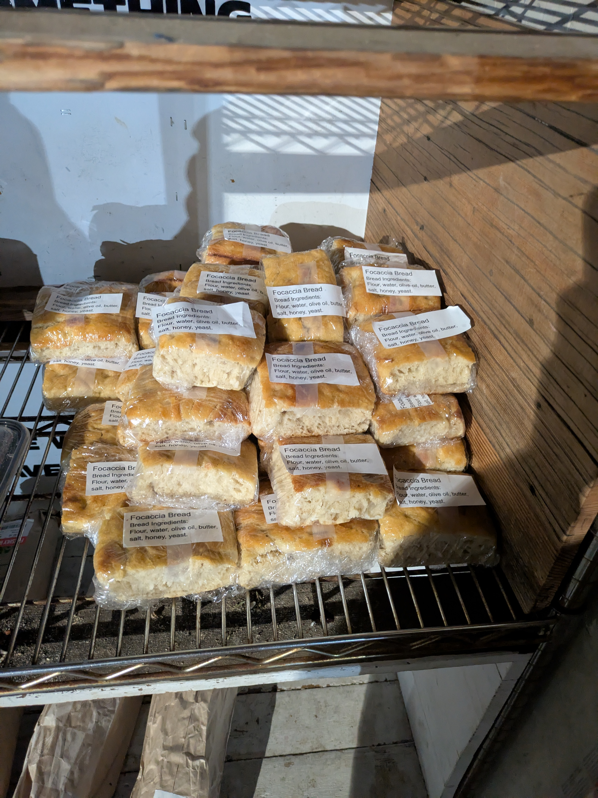

At Community Baking, friends and neighbors gather to bake focaccia bread for people who are hungry.
We have 3 up-coming dates in 2026:
For all dates, the hours are 11 am to 5 pm, but you do NOT need to come for the full 6 hours! Of course, you are welcome to come for the full time, but if that's not possible, no problem.
The greatest needs for volunteers happen
Please RSVP to Toby at 774-253-8962, tobyd05@gmail.com or @high-neighbor.bsky.social
Also contact Toby, if you would like to receive our email announcements and reminders.

Home | Every One is Welcome | What We'll Do | Where the Bread Goes | Location and Parking | What to Bring |